PA3 · Portfolio allocation — Alan's original tool, strengthened in place5 Oct 2026 · allocation repo branch pa3-20261005 · not deployed · the live page at allocation.scintillahub.ai is untouched until the coordinator deploys
Same page, same sections in the same order, same dials. What changed is underneath: every number that was stale or missing now comes from the live source that exists today, the how much is the July policy ladder (100 · 80 · 50 · 30 · 15 by condition), the sectors are read the way the Hub's sector compare reads them, and the names rank fundamentals first, then the Geiger for timing. Pictures first; the brief it writes today; then where every number comes from.
What it says today (5 Oct, about 14:00 ET)
The market reads NEUTRAL (heat +0.03). The index is hot (S&P +0.68, Nasdaq +0.80), but the average stock is not (equal-weight -0.09, small caps -0.05): the biggest names carry the tape. 4 of 14 sectors lead (Technology, Crypto, Energy), 6 lag, 4 turning up from below (Metals, Industrials, Utilities, Consumer discretionary). Inside the sectors the bow tie reads -0.11: the big names carry each sector. Rates are a headwind at 5.28%. The VIX table is stale, so volatility is not voting.
The policy for a neutral market is 50% invested, 50% cash. You hold 0% invested, so 50% of equity is to deploy, spread by each sector's own coldness — the biggest shares go to Consumer discretionary 7%, Utilities 6%, Industrials 5%, Metals 4% of equity (the full split is in TARGET MIX).
Inside those sectors the names that rank first — fundamentals first, then the Geiger for timing — are GOOG (Communications, cheap vs peers, target +19%), MU (Technology, cheap vs peers, target +32%), GOOGL (Communications, in line vs peers, target +22%), BKNG (Consumer discretionary, cheap vs peers, target +46%), NVDA (Technology, cheap vs peers, target +36%). Their comparables and the checked analyst targets are in 4b.
The pictures — before (the live page this morning) → after (the branch), section by section
THE PAGE, TOP
the title, the badges under it (what is live, stale or fallback), THE BRIEF and the first voters
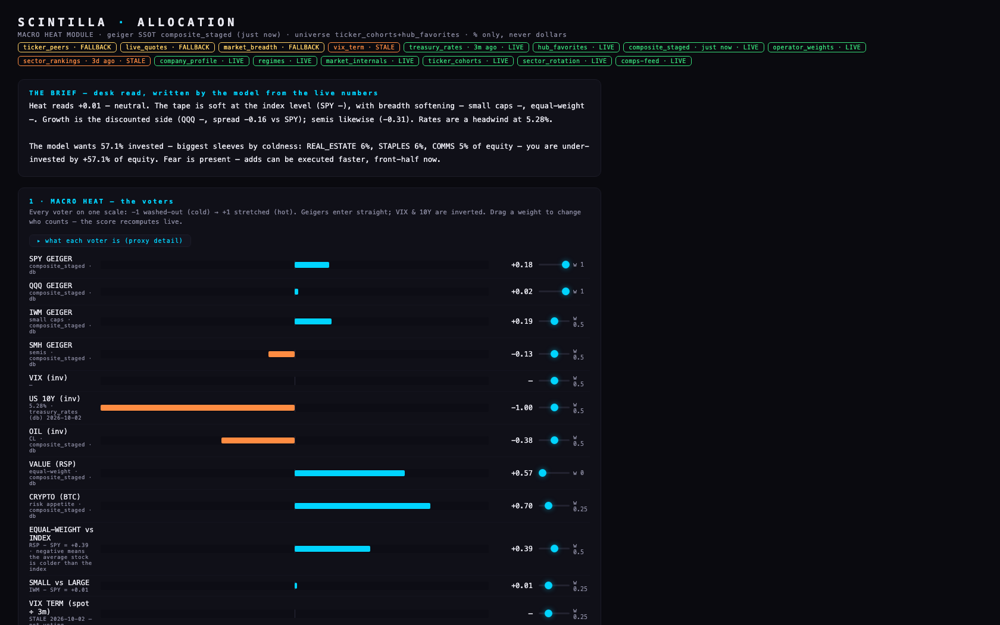
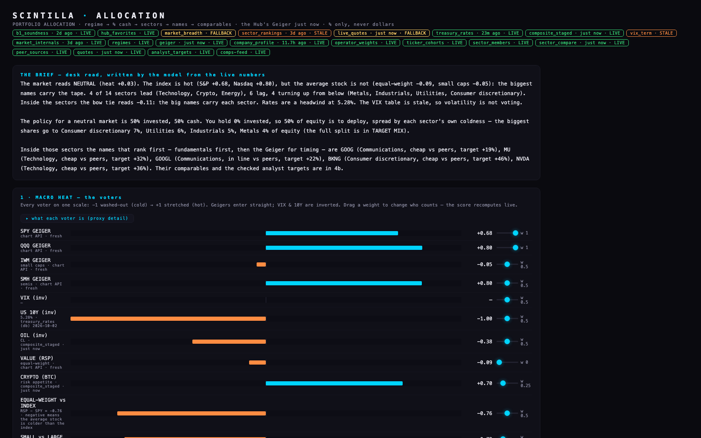
THE BRIEF
the desk read, written from the live numbers
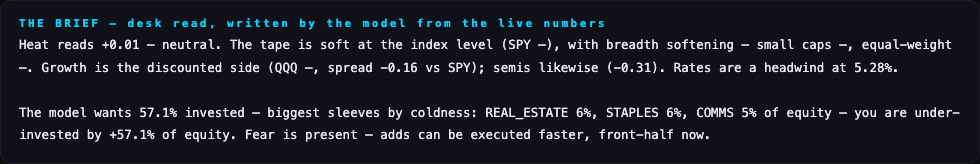
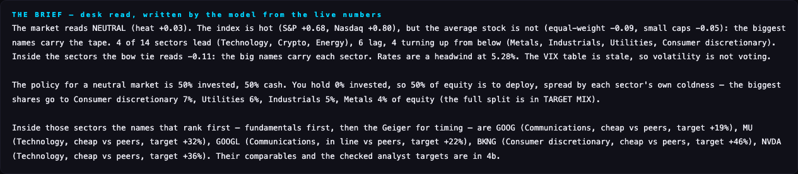
1 · MACRO HEAT
the voters and their dials
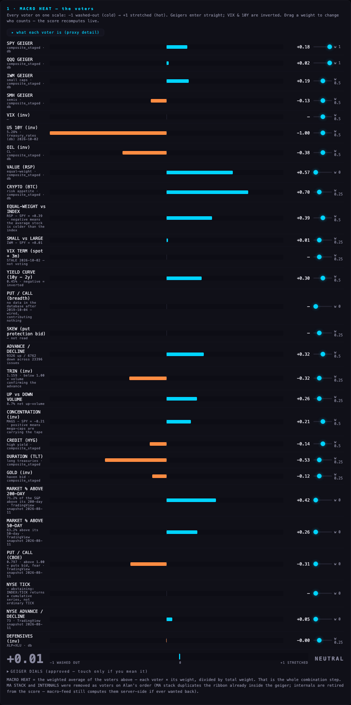
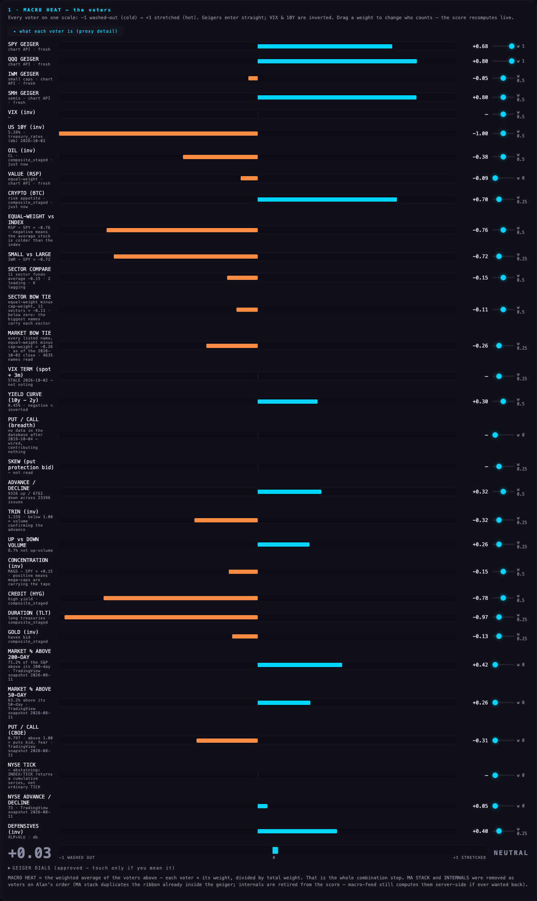
INPUTS
everything Alan sets — the equalizer
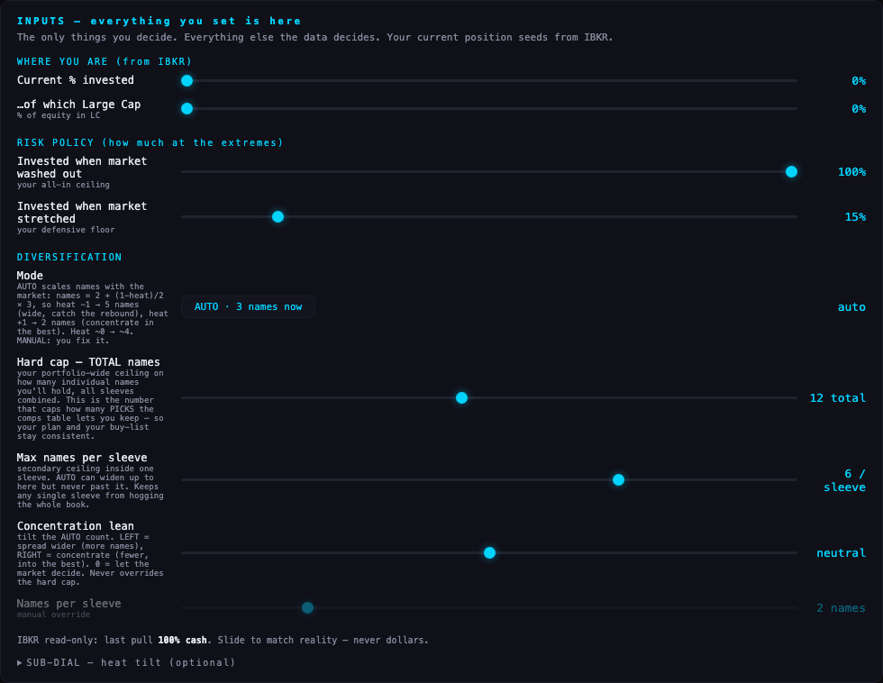
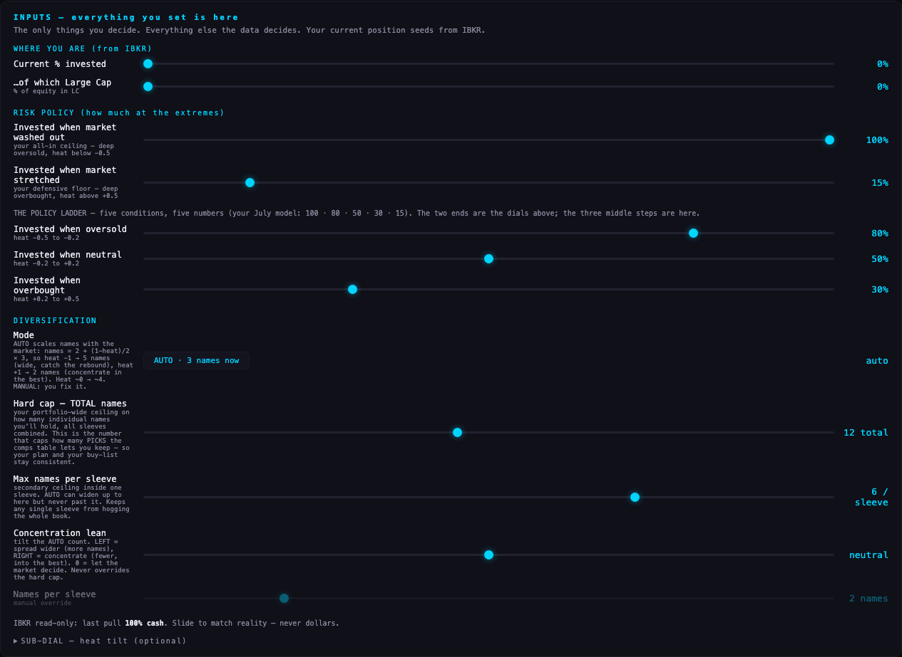
2 · TARGET MIX
how much, and where
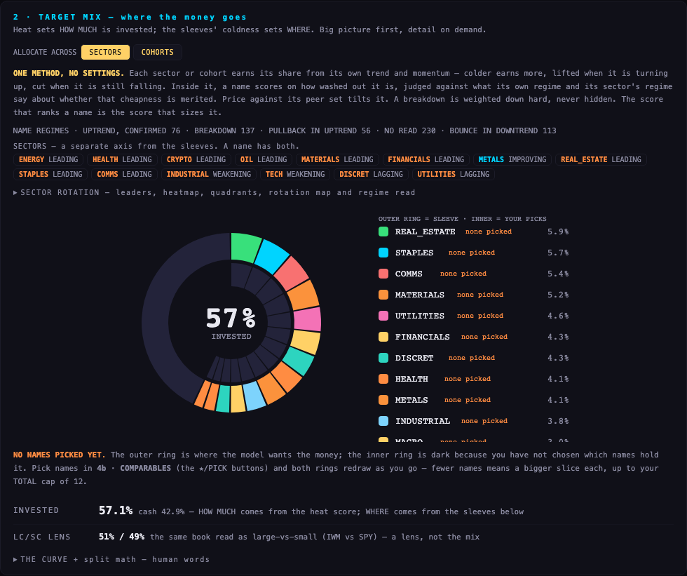
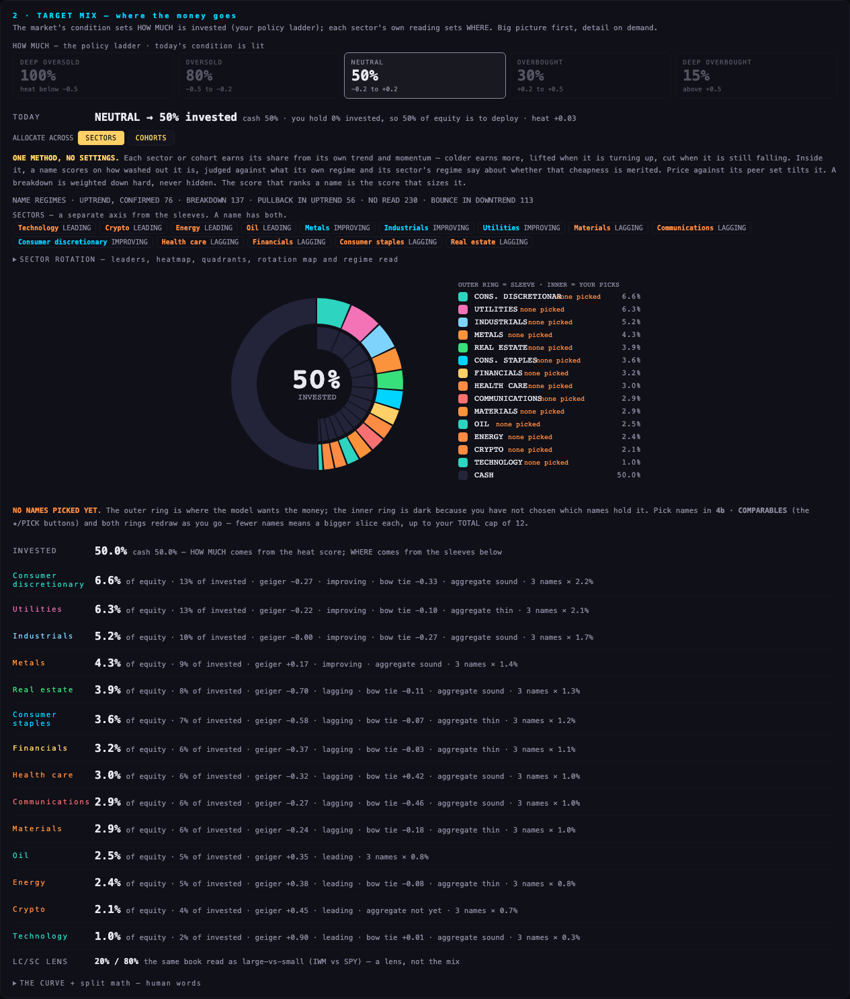
3 · THE MOVES
unchanged by design
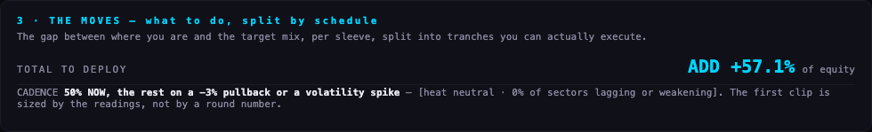
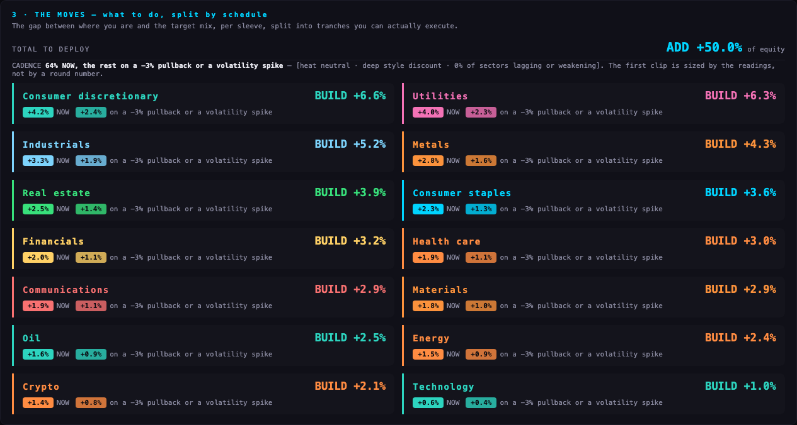
4 · MOVE OPTIONS
the names inside the funded sectors
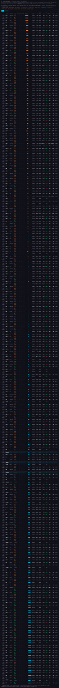
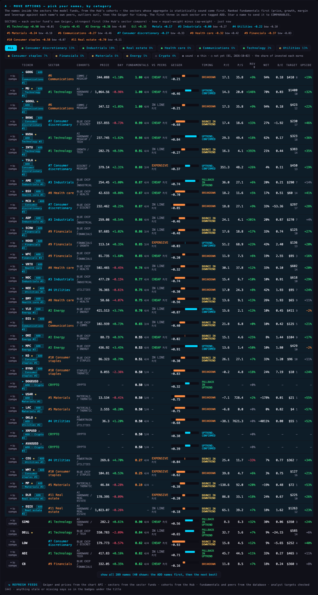
4b · COMPARABLES
the ADD names side by side
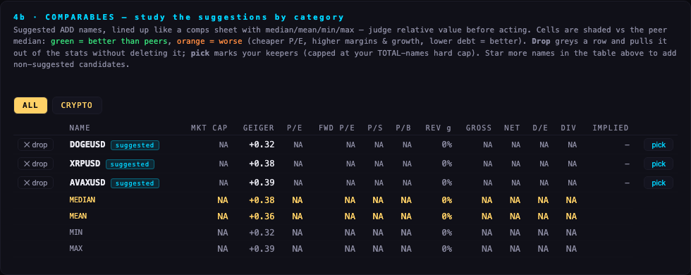
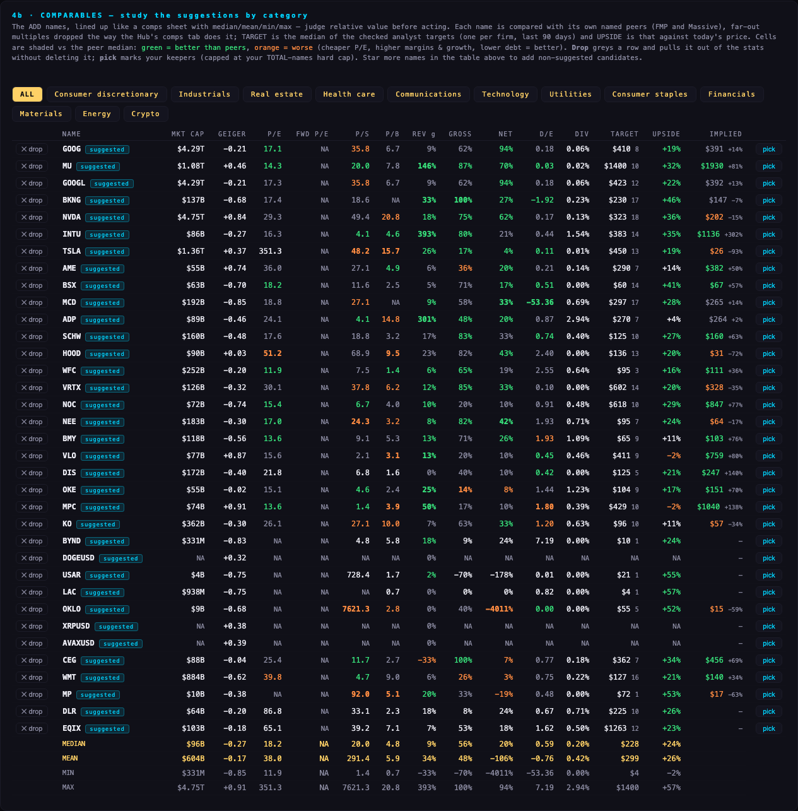
The same pictures at 1920 × 1080, and every section at both sizes, are in shots/ (before-* and after-*). The two readout files beside them hold the badges, the heat, the brief and the targets as text, before and after.
Where each number comes from — before and now
| section · number | source before (this morning) | source now (the branch) | fresh? |
|---|---|---|---|
| THE BRIEF | written from Yahoo-era client Geigers that no longer load — it printed "SPY —, small caps —" | the chart API Geiger, the sector funds, the policy ladder, the ranking — plain words, no codes | yes |
| 1 · MACRO HEAT — the four index Geigers, RSP, XLP, XLU | composite_staged — the index rows were 42 days old (24 Aug), the badge said "just now" because the crypto rows were fresh | the chart API /geiger, the Hub's own Geiger, 590 names, fresh every cycle (about 3 minutes old when read) | yes |
| 1 · OIL, CRYPTO (CLUSD, BTCUSD) | composite_staged | composite_staged — refreshed today; the chart API carries no crude or bitcoin symbol | yes |
| 1 · VIX | vix_term, 2 Oct — stale, not voting | the same — still stale, and it says so; no live VIX source exists yet | no |
| 1 · US 10Y | treasury_rates | the same, refreshed today (5.28%) | yes |
| 1 · SECTOR COMPARE · SECTOR BOW TIE (new voters, dial 0.5 each) | none | the eleven State Street sector funds and the eleven Invesco equal-weight twins from /geiger — the Hub's sector compare and bow tie | yes |
| 1 · MARKET BOW TIE (new voter, dial 0.25) | none | B1's whole-market bow tie from the Hub (−0.26 as of the 2 Oct close) — dated, and shown with its date | dated 2 Oct |
| 1 · advance/decline, TRIN, up/down volume | market_internals, no age shown | the same, with its date (3 Oct); it stops voting past 5 days | yes |
| 1 · market % above 200-day, put/call | market_breadth — no such table; a TradingView snapshot of 11 Aug at weight 0 | unchanged — weight 0, not voting | no |
| 2 · TARGET MIX — how much | a straight line between the ceiling and the floor | the July policy ladder: 100 · 80 · 50 · 30 · 15 by condition, five dials, today's rung lit | — |
| 2 · TARGET MIX — the split between sectors | sector_rankings, 3 days old, plus our own names' regimes | each sector fund's own Geiger (cap-weight) with the equal-weight twin's bow tie, from /geiger; B1 says which aggregates are sound | yes |
| 4 · MOVE OPTIONS — prices | live_quotes — 18 Aug for stocks, the badge read FALLBACK | the chart API /quotes, live, 317 prices | yes |
| 4 · MOVE OPTIONS — cohorts | ticker_cohorts and ticker_membership | the same, with B1's soundness (● sound · ◐ thin · ○ not yet) and sound ones first | yes |
| 4 · MOVE OPTIONS — fundamentals | comps-feed for the candidates | comps-feed for the candidates and their peers (1,122 names priced) | yes |
| 4 · MOVE OPTIONS — the ranking | coldness × regime × a peer tilt | fundamentals first (price, growth, margin, leverage against each name's own peers), then the Geiger for timing | — |
| 4b · COMPARABLES — peers | ticker_peers — the table does not exist; the badge read FALLBACK | peer_sources (FMP and Massive named peers), C5's outlier rule (log-MAD, K = 3, at least 5 peers) | yes |
| 4b · COMPARABLES — analyst targets | none | A4's checked notes: analyst_target_news, quality ok, last 90 days, one per firm — TARGET and UPSIDE columns | yes |
| company facts | company_profile, no age shown | the same, filled by F1, age shown (about 12 hours) | yes |
| 5 · INPUT MAP | the dials only | the dials, the policy ladder, and a SOURCE row for every number above | — |
Still stale and saying so on the page: the VIX table (2 Oct, so volatility is not voting) and the market-breadth table (does not exist; those voters sit at weight 0). Everything else on the page reads LIVE in the badges under the title.
What could be wrong
- The chart API answers only the Hub's address in a browser. On the subdomain the page reaches it through two rewrites in
vercel.json(/geigerand/quoteson this site → the chart API). I tested that with a local stand-in that does exactly what the rewrites do; the real rewrite is proven only when the coordinator deploys. If it fails, the badge reads FALLBACK and the Geigers fall back to composite_staged, which is 6 weeks old for the index funds. - The whole-market bow tie and the soundness verdicts are B1's 3 Oct snapshot (the 2 Oct close). They show their date; they do not refresh until B1 runs again.
- The regime labels (uptrend, pullback, breakdown) still come from the daily tables dated 2 Oct, not from the live Geiger. They decide the timing half of the ranking.
- The implied price in COMPARABLES is the older peer-median method; it now drops C5's outliers but is not C5's weighted field. TSLA's "$26" is that method at work on a 351× P/E.
- The policy ladder replaces the straight line. Between the two ends the old page interpolated; the new page steps. That is Alan's July model, but it is a change in the arithmetic and should be looked at.
- A name with few fundamentals (crypto, loss-makers with no growth figure) scores 0.50 — neutral — and can still be tagged ADD inside a thin sector (DOGEUSD, XRPUSD under Crypto). The 4/4 count beside the score says how much is measured.
What I did not do
- Did not deploy, did not touch the deploy clone, did not change the Hub. The live page is as it was this morning.
- Did not rewrite THE MOVES (by design) and did not remove any of the August voters; they keep their dials.
- Did not add a VIX source; none exists live.
- The source file the deploy script copies (
ALLOCATION_MODULE.html, 10 Aug) is not the live page (11 Aug series). I did not touch it — see the deploy note.
Deploy — for the coordinator
1 · In the deploy clone: git -C "/Users/alanharvey/SCINTILLA 0.5/_ALLOC_DEPLOY" fetch origin && git -C "/Users/alanharvey/SCINTILLA 0.5/_ALLOC_DEPLOY" merge --ff-only origin/pa3-20261005 (brings index.html, vercel.json, tests/; the branch is on top of main's 45e9ddb). Then git push origin main — Vercel auto-deploys project scintilla-allocation; or vercel deploy --prod from the clone.
2 · Rollback: git -C "/Users/alanharvey/SCINTILLA 0.5/_ALLOC_DEPLOY" reset --hard 45e9ddb && git push --force origin main, or redeploy the previous Vercel deployment.
3 · Do not run DEPLOY_ALLOCATION.command. It copies ALLOCATION_MODULE.html (the 10 Aug file) over index.html and would roll the live page back two months. After deploying, copy the new index.html over ALLOCATION_MODULE.html so the script is safe again.
4 · First check after deploy: open the page, the badge geiger · … · LIVE must be green and SPY's voter must read the same as the Hub's SPY Geiger. If it reads FALLBACK, the rewrite did not take.
Decisions for Alan
- The ladder or the line? The branch uses your five steps (100/80/50/30/15). Recommendation: the ladder — it is your model, and the three middle steps are dials.
- Should the three new voters count by default? SECTOR COMPARE 0.5, SECTOR BOW TIE 0.5, MARKET BOW TIE 0.25. Recommendation: yes — today they pull the heat down a little (narrow tape), which is the point.
- Should a name with no fundamentals be allowed an ADD tag? Today it scores neutral. Recommendation: no — require at least two measured readings; one line to change.
PAGE SPECS
Tests: node --test tests/ in the allocation repo — 11 pass (each source reachable and fresh; SPY, XLK, the bow tie, NVDA's price, NVDA's checked target median, NVDA's peers, B1's market bow tie and verdicts all equal the source; the ladder; sound-first tabs; no codes in the brief; only vix_term, market_breadth, live_quotes, sector_rankings may read stale or fallback). Headless Chromium, every non-GET request blocked and counted (0). Pictures from the same local stand-in at 1680 × 1050 and 1920 × 1080. Commits on pa3-20261005: PA3 1 sources · 2 sectors · 3 policy and brief · 4 names and comparables · 5 input map and trace · 6 tests · 7 one screen each. Fundamentals score = the mean of up to four readings against the name's own peers (outliers out), each 1 when better than three quarters of the peers and 0 when worse, a missing reading counting 0.5. Timing = (1 − Geiger)/2 × (0.45 + 1.1 × regime fit). Sector share = max(0.05, (1 − score)/2) × turn (improving 1.35, weakening 0.85, breakdown 0.6), capped 2–35%, renormalised. SECTOR COMPARE = the mean of the eleven State Street fund Geigers; SECTOR BOW TIE = the mean of (equal-weight twin − fund); MARKET BOW TIE = B1's figure. Checked target = the median of one checked target per firm, quality ok, last 90 days.